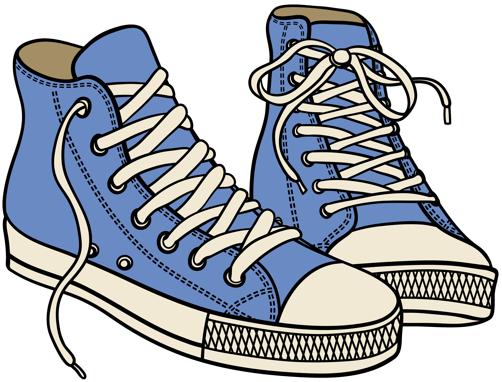

Timeless Style: The Iconic Appeal of Converse Sneakers
Converse is an iconic American footwear brand renowned for its classic canvas sneakers. These timeless shoes have been a symbol of self-expression and individuality for generations, appealing to trendsetters and creatives alike. With their versatile style and enduring charm, Converse sneakers are a true fashion staple.